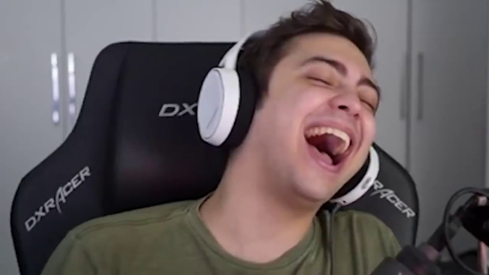
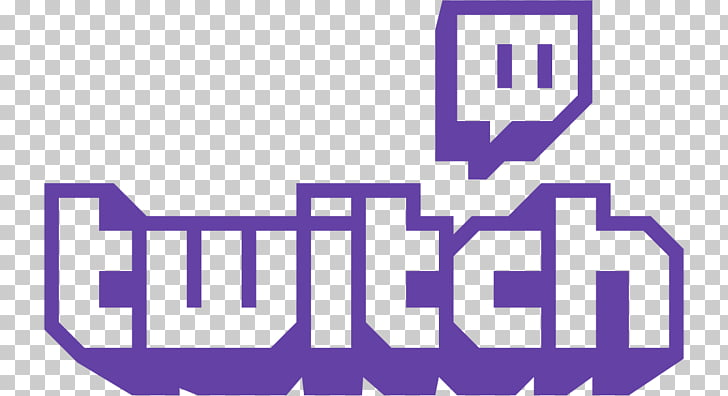

Alan Ferreira é um streamer mais assistido atualmente no brasil,tambem é o criador do canal do YouTube Alanzoka, que durante muito tempo teve o nome de Eletronic Desire GE (Gamers Entertaiment).
O youtuber nasceu dia 13 de maio em São Paulo. Alan Ferreira é do signo de Touro.
O primeiro vídeo que postou, em 2011, foi de Minecraft, mas Alan desde o início ofereceu um conteúdo de jogos bem diversificado. Entre os games que faz gameplay no Alanzoka estão Resident Evil, Midnight Scenes, Lost in Vivo, Location Withheld, Feed me Billy e Night Shift.
